Aang
El último Avatar, sobreviviente de los Nómadas Aire. Pasó 100 años congelado en un iceberg y ahora debe dominar los cuatro elementos para detener la guerra.
Dominio95
Velocidad90
Astucia70
El Equipo Avatar, sus aliados y los villanos principales — con estadísticas de combate y una habilidad oculta por descubrir en cada ficha.
El último Avatar, sobreviviente de los Nómadas Aire. Pasó 100 años congelado en un iceberg y ahora debe dominar los cuatro elementos para detener la guerra.
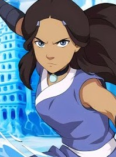
Maestra Agua de la Tribu del Sur. Encontró a Aang en el iceberg junto a su hermano y se convirtió en su primera maestra de Agua control.
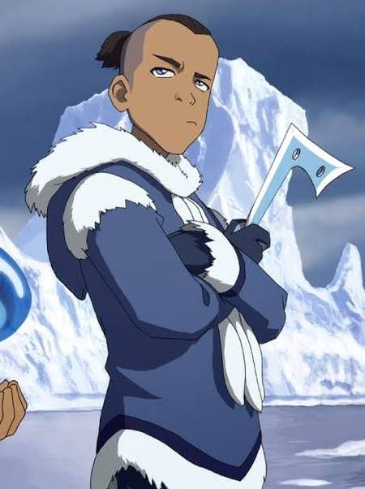
Guerrero de la Tribu Agua del Sur, hermano de Katara. Sin dominio elemental, compensa con estrategia, ingenio y un humor que no siempre cae bien.
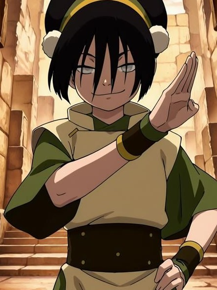
Maestra Tierra invidente y la mejor de su generación. "Ve" a través de las vibraciones del suelo, lo que la hace prácticamente imposible de engañar.
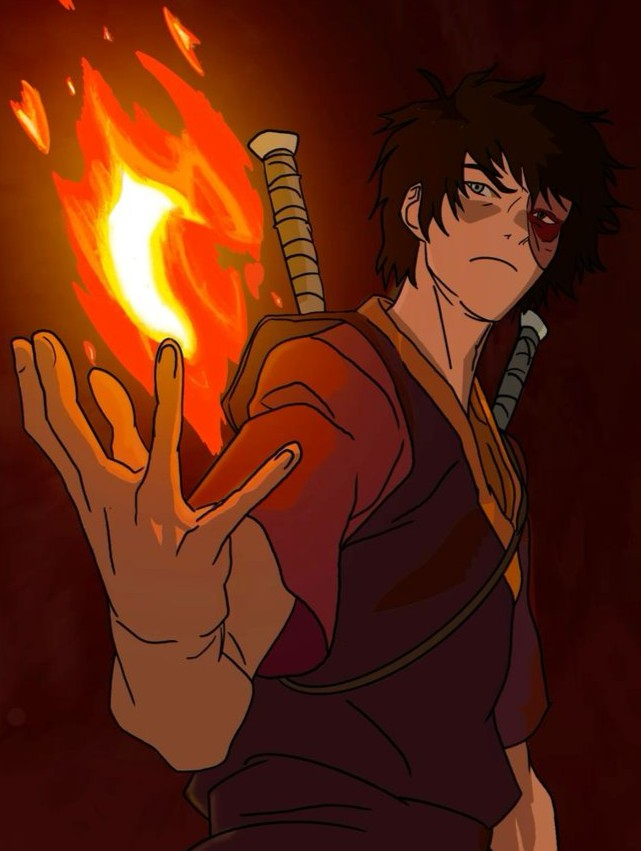
Príncipe exiliado de la Nación del Fuego. Persigue al Avatar para recuperar su honor y el trono que su padre le arrebató.
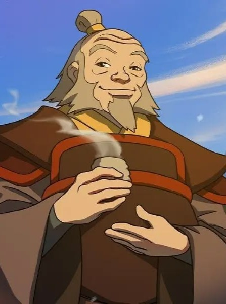
El Dragón del Oeste y mentor de Zuko. General retirado de la Nación del Fuego, hoy prefiere el té y la sabiduría a la conquista.
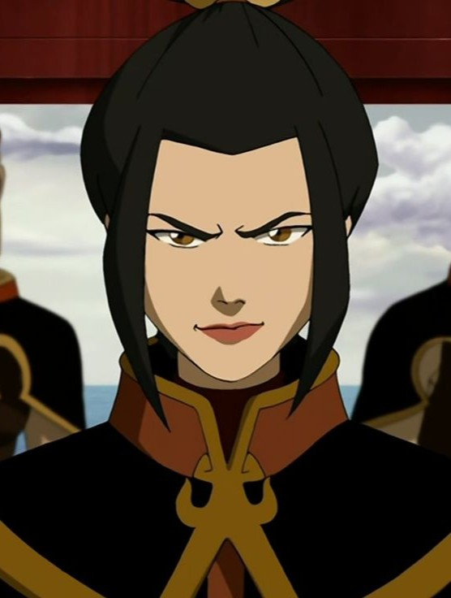
Princesa de la Nación del Fuego y prodigio del combate. Fría, calculadora y temida incluso dentro de su propia familia.
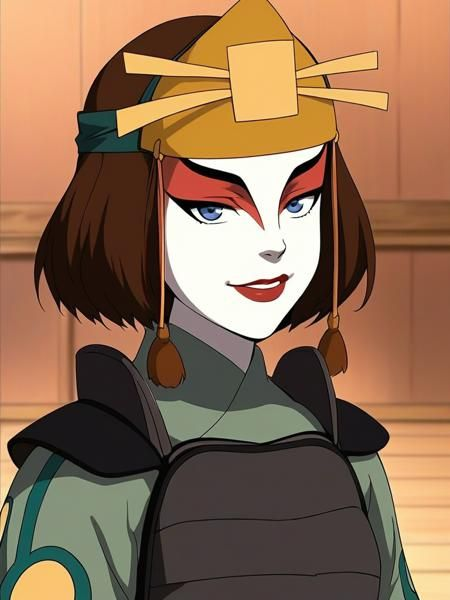
Líder de las Guerreras Kyoshi. Entrenó a Sokka en su propio estilo de combate y terminó uniéndose al grupo por su cuenta.
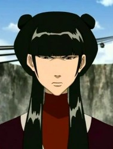
Hija de una familia noble de la Nación del Fuego. Sin dominio elemental, pero letal con cuchillos arrojadizos y prácticamente imperturbable.
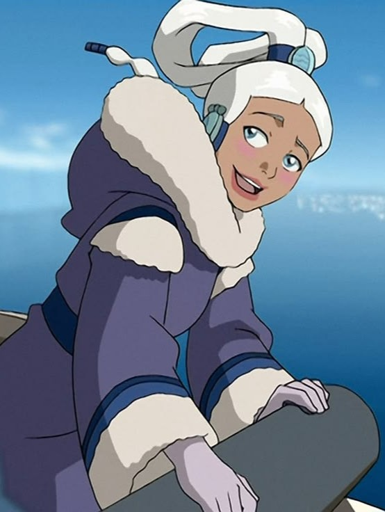
Princesa de la Tribu Agua del Norte. Su destino está ligado desde su nacimiento al Espíritu de la Luna, algo que se revela durante el asedio a su tribu.
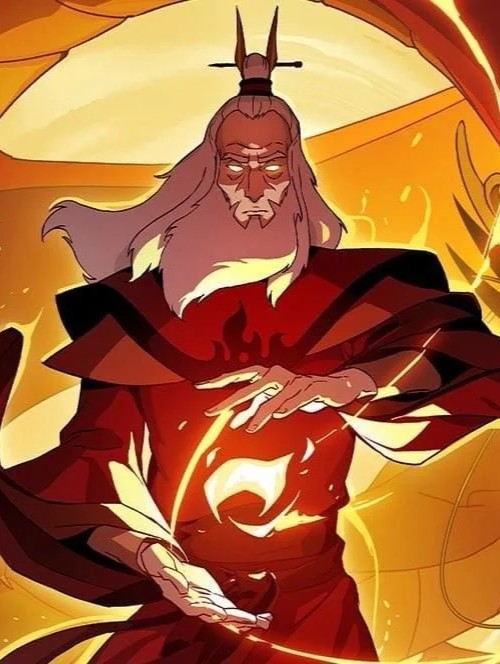
El Avatar anterior a Aang, originario de la Nación del Fuego. Le habló a Sozin de los peligros de su ambición mucho antes de la guerra.
Rey de Omashu y viejo amigo de Aang de antes de la guerra. Su forma de pelear es tan excéntrica como su forma de gobernar.
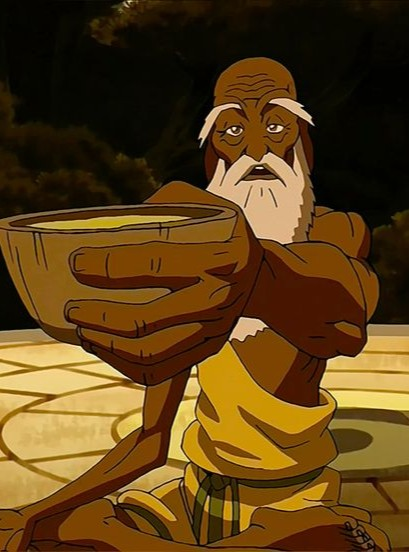
Guía espiritual que vive aislado en el Monte Potala. Ayuda a Aang a enfrentar aquello que lo bloquea por dentro para acceder al Estado Avatar.
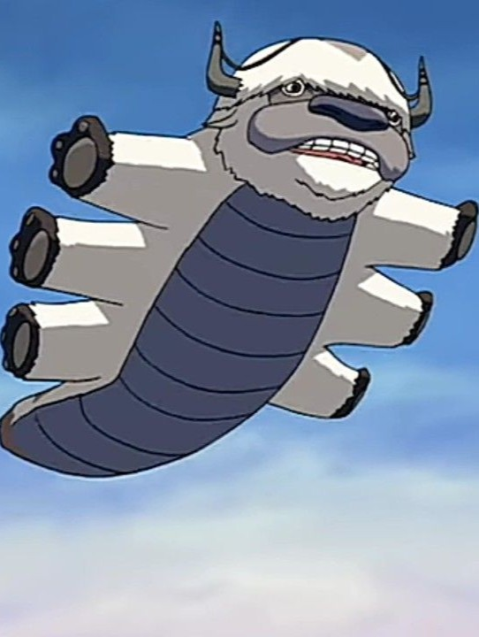
Bisonte volador y compañero fiel de Aang desde el Templo Aire. Los lleva a todos de nación en nación sin importar la distancia.
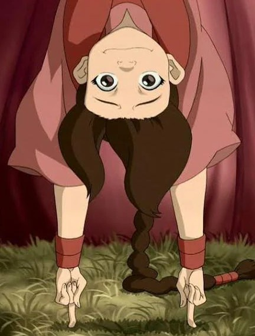
Acróbata formidable y amiga de Azula. Domina la técnica del bloqueo de chi, inmovilizando los músculos y el poder de los maestros elementales con golpes veloces.
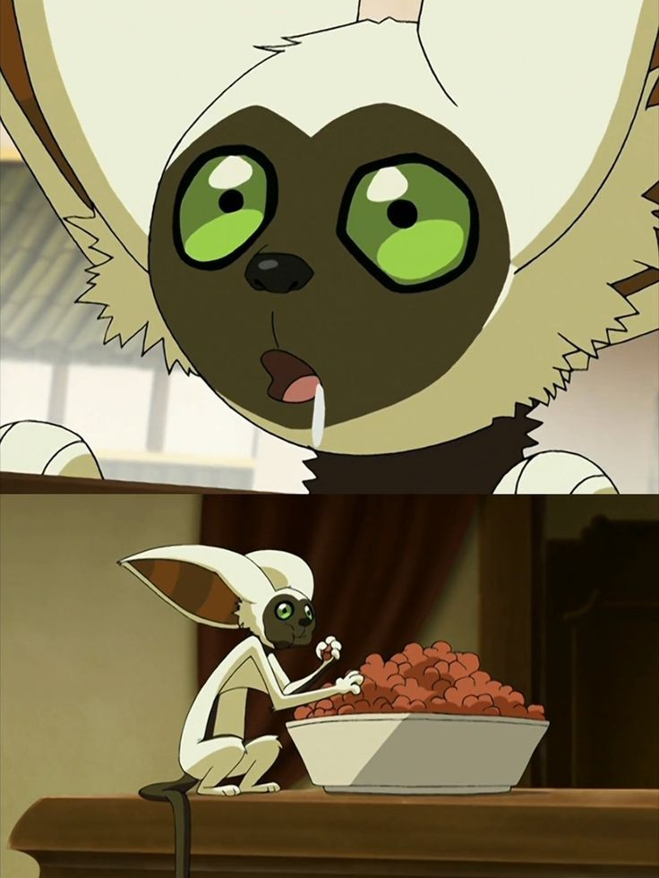
Lémur volador hallado por Aang en el Templo Aire del Sur. Curioso, intrépido y con una habilidad innata para colarse en cualquier lugar y salir ileso.
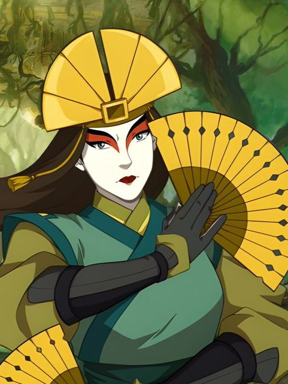
Avatar legendaria nacida en el Reino Tierra. Con una estatura imponente y justicia inquebrantable, separó la península para proteger a su pueblo y creó la Isla Kyoshi.